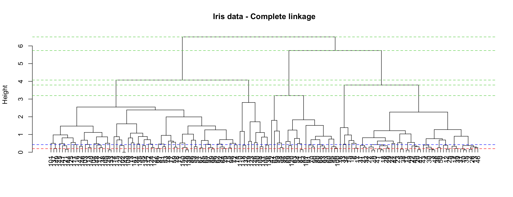
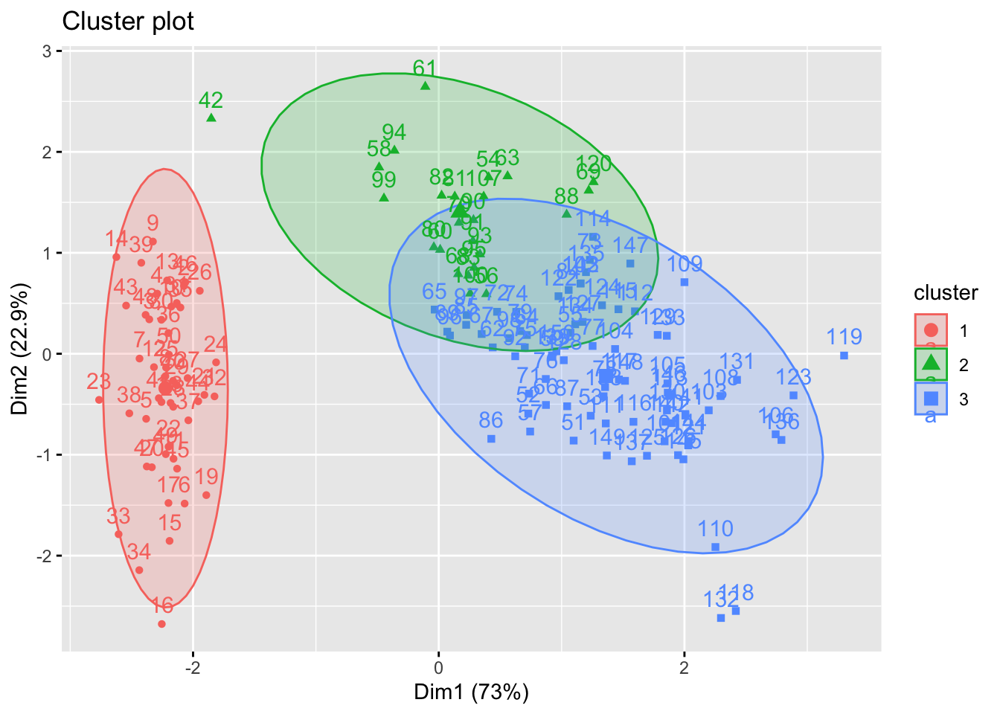
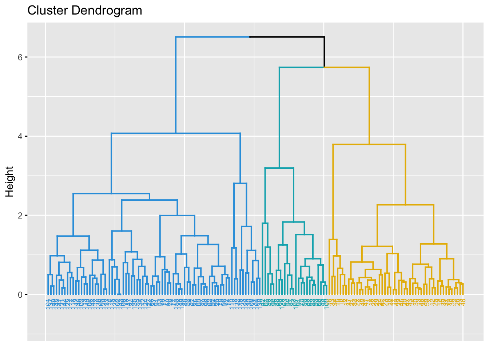
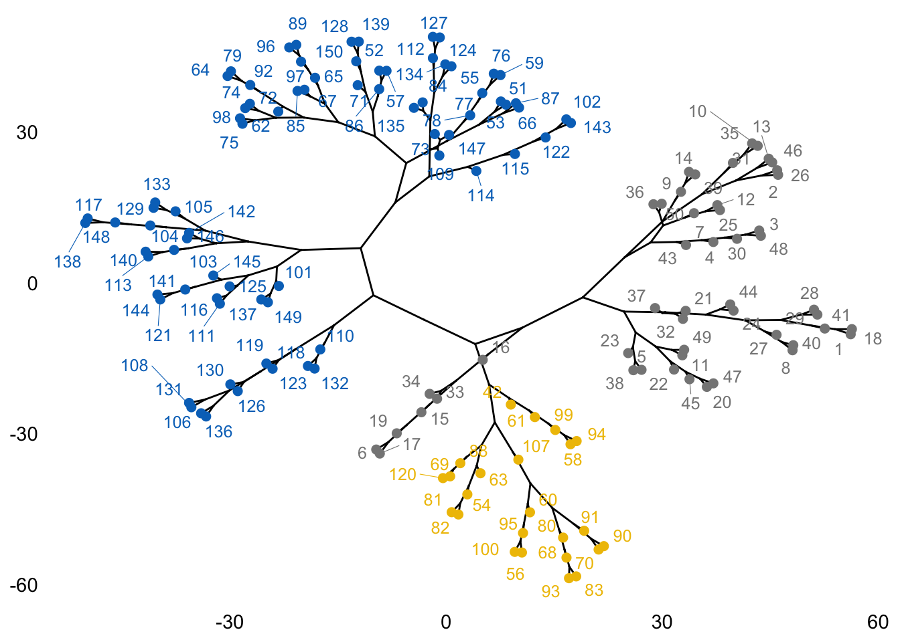
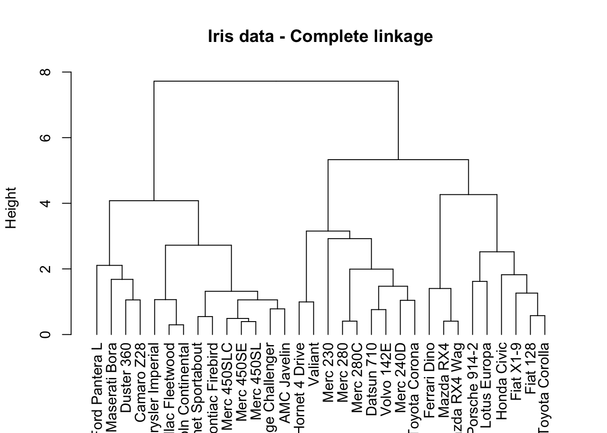
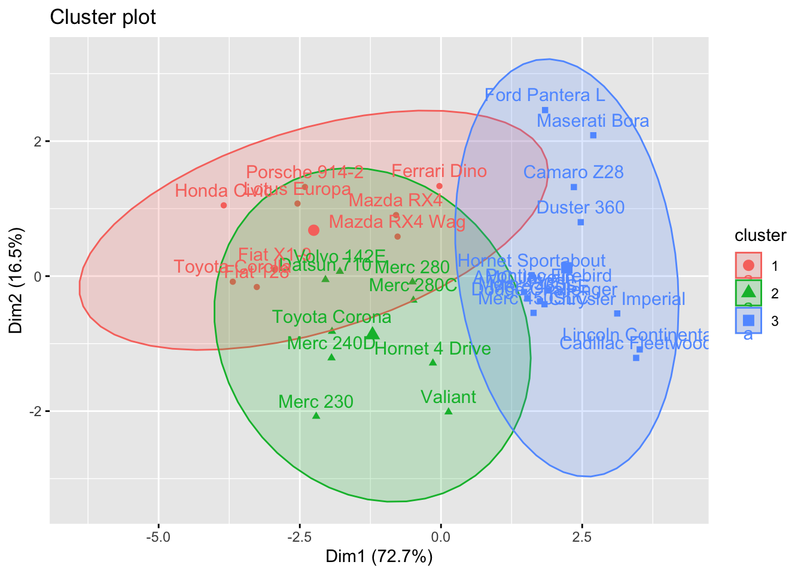
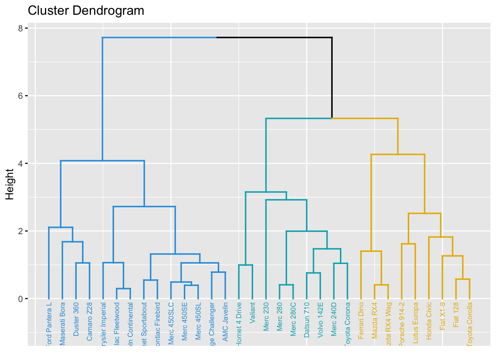
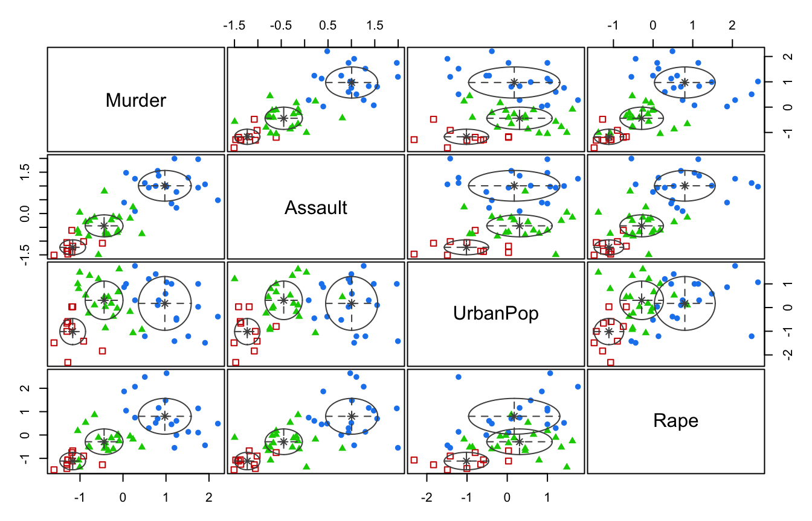
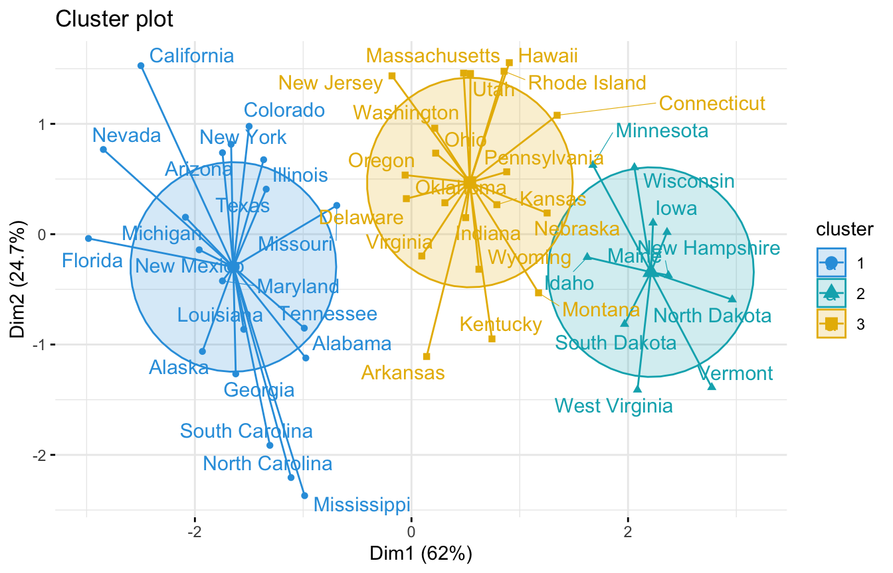

iris.scaled <- scale(iris[, -5])Practical 8 - Hierarchical and Model Based Clustering
In this session, you are going to explore the implementation in R of two clustering methods:
- First, you shall have a recap of the theory, and have a look at the code used to perform HC on the
irisdataset; - In exercise 1, you will apply hierarchical clustering to the
mtcarsdata set; - In exercise 2, you will become more familiar with the model-based clustering technique introduced in the workshop and apply it to the
USArrestsdata set.
Hierarchical clustering, revisited
Here we have a deeper look at the algorithm underlying hierarchical clustering and the possible ways to visualize the output. We will also learn how to use the agglomerative coefficient to select an appropriate linkage method. At the end of the workshop, we will learn more about model-based clustering and see how to implement this in R.
The next step is to compute the Euclidean distances and hierarchical clustering with complete linkage (we will later see how other linkages affect the final result).
library(factoextra)Loading required package: ggplot2Welcome! Want to learn more? See two factoextra-related books at https://goo.gl/ve3WBa# Compute distances and hierarchical clustering
dd <- dist(iris.scaled, method = "euclidean")
hc <- hclust(dd, method = "complete")
hc
Call:
hclust(d = dd, method = "complete")
Cluster method : complete
Distance : euclidean
Number of objects: 150 We can visualise the object by using a dendrogram. This enables us to determine the point to cut the tree and so choose the number of clusters.
dendros <- as.dendrogram(hc)
plot(dendros, main = "Iris data - Complete linkage",
ylab = "Height", cex = .01)
abline(h=0.2, lty = 2, col="red")
abline(h=0.428, lty = 2, col="blue")
Hs <- hc$height[(length(hc$height)-4):length(hc$height)]
abline(h=Hs, col=3, lty=2)
The height axis on the dendrogram displays the dissimilarity between observations and/or clusters. The horizontal bars indicate the point at which two clusters/observations are merged. For instance, observations 137 and 149 are merged at a distance (height) of 0.2 (see the red line), observations 111 and 116 are merged at a height of about 0.428 (see the blue line) and so on.
Dissimilarity scores between merged clusters only increase as we agglomerate clusters together. In other words, we can always draw a proper dendrogram, where the height of a parent is always higher than height of its children. This property is called no inversion property which is illustrated with dashed green lines in the plot.
Visualisation of the plot above can be improved by using the fviz_cluster() and fviz_dend() functions in the factoextra package.
library(factoextra)
par(mfrow=c(1, 2))
fviz_cluster(list(data=iris.scaled, cluster=cutree(hc, 3)), ellipse.type = "norm")
fviz_dend(hc, k = 3, # Cut in three groups
cex = 0.5, # label size
k_colors = c("#2E9FDF", "#00AFBB", "#E7B800"),
color_labels_by_k = TRUE, # color labels by groups
ggtheme = theme_gray() # Change theme
)
We can also examine the number of observations in each of the three clusters.
hcut <- cutree(hc, k = 3)
table(hcut)hcut
1 2 3
49 24 77 The aggregate() function can be used to compute the means of the features in each cluster.
aggregate(iris[, -5], by=list(cluster=hcut), mean) cluster Sepal.Length Sepal.Width Petal.Length Petal.Width
1 1 5.016327 3.451020 1.465306 0.244898
2 2 5.512500 2.466667 3.866667 1.170833
3 3 6.472727 2.990909 5.183117 1.815584Comparing linkages
In the previous instance, we have used complete linkage. For practical purposes, we may want to examine which choice of linkages is the best one for our data set. A way to do this, is to use the agnes function (acronym for AGglomerative NESting) found in the cluster package. This will compute the so called agglomerative coefficient (AC). The AC measures the dissimilarity of an object to the first cluster it joins, divided by the dissimilarity of the final merger in the cluster analysis, averaged across all samples. The AC represents the strength of the clustering structure; values closer to 1 indicates that clustering structure is more balanced while values closer to 0 suggests less well balanced clusters. The higher the value, the better.
library(cluster)
m <- c("average","single","complete")
names(m) <- c("average","single","complete")
# function to compute coefficient
ac <- function(x){
agnes(iris.scaled, method = x)$ac
}We can now use the map function from tidyverse package, specifically map_dbl() to obtain the agglomerative coefficients. Note that the map functions transform their input by applying a function to each element of a list or atomic vector (use Google to check the meaning of atomic vector) and returning an object of the same length as the input.
library(tidyverse)
map_dbl(m,ac) average single complete
0.9035705 0.8023794 0.9438858 The highest ac value is 94.4%. So, complete linkage is the best choice among the three. We are on course with the use of complete linkage.
We remark that the choice of linkages can be extended to other methods (For example hclust() allows also centroid, ward.D, wardD.2, median and mcquitty). These are outside the scope of our workshop.
Other visualizations
We can also visualise the data as a fancy kind of tree using the package igraph and combining it with the fviz_dend() function. These trees are known in biology as ``phylogenic trees’’, then giving the name to the type option, which can then be used for any type of data.
library(igraph)
fviz_dend(hc, k = 3, k_colors = "jco", type = "phylogenic", repel = TRUE)
As we did for K-means and K-medoids, we can compare original species labels with our results from Hierarchical clustering:
dd <- cbind(iris, cluster=hcut)
table(dd$Species,dd$cluster)
1 2 3
setosa 49 1 0
versicolor 0 21 29
virginica 0 2 48Overall, a correct classification is obtained in 78.7% percent of the observations. But we can do much better! If we are willing to be more sophisticated, we can try model-based clustering.
Exercise 1 (Hierarchical Clustering)
The mtcars data set contains information on the characteristics of 23 cars. We can select the continous features and scale them to prepare the data set for cluster analysis
data(mtcars)
cars.scaled <- scale(mtcars[,-(8:12)])Task 1a
Perform hierarchical clustering on the pre-processed data set and choose an ideal number of clusters based on the result.
Solution for Task 1aClick for solution
# Compute distances and hierarchical clustering
dd <- dist(cars.scaled, method = "euclidean")
hc <- hclust(dd, method = "complete")
hc
Call:
hclust(d = dd, method = "complete")
Cluster method : complete
Distance : euclidean
Number of objects: 32 The cluster dendrogram can be visualized as follows
dendros <- as.dendrogram(hc)
plot(dendros, main = "Iris data - Complete linkage",
ylab = "Height", cex = .01)
The choice of height where to cut the tree is up to you, but 3 or 5 clusters seem to be the most reasonable choices here.
Once the number of clusters is chosen, colours can be used to visualize the assignment of clusters to observations:
fviz_cluster(list(data=cars.scaled, cluster=cutree(hc, 3)), ellipse.type = "norm")
fviz_dend(hc, k = 3, # Cut in three groups
cex = 0.5, # label size
k_colors = c("#2E9FDF", "#00AFBB", "#E7B800"),
color_labels_by_k = TRUE, # color labels by groups
ggtheme = theme_gray() # Change theme
)
Task 1b
Using the full data set mtcars, print out the means of the features for each cluster, then make an attempt at an interpretation of what does it mean for a car to belong to a given cluster.
Click for solution
Assuming we divided our observations into three clusters, we can compute the variable averages for points in each cluster using the aggregate() command.
cluster=cutree(hc, 3)
aggregate(mtcars, by=list(cluster), mean) Group.1 mpg cyl disp hp drat wt qsec
1 1 26.90000 4.666667 109.4333 94.22222 4.103333 2.167000 17.70778
2 2 21.04444 4.888889 161.6444 101.88889 3.661111 3.051111 19.66444
3 3 15.10000 8.000000 353.1000 209.21429 3.229286 3.999214 16.77214
vs am gear carb
1 0.5555556 1.0000000 4.333333 2.555556
2 1.0000000 0.2222222 3.666667 2.000000
3 0.0000000 0.1428571 3.285714 3.500000Some remarkable facts that we can observe are:
- Cluster 3 collects the more powerful and fuel consuming cars, while cluster 1 collects fuel efficient cars.
- All cars in cluster 3 have a V-shaped engine (value 0 of variable
vs), while all cars in cluster 2 have a straight engine. Cars in cluster 1 have a mix of the two. - All cars in cluster 1 are automatic (value 0 of variable
am) while most cars in the other two clusters are manual.
Exercise 2: Model-based clustering
In this exercise, we will use the model-based clustering approach to analyse the USArrests data.
library(mclust)Package 'mclust' version 6.1.1
Type 'citation("mclust")' for citing this R package in publications.
Attaching package: 'mclust'The following object is masked from 'package:purrr':
mapdata("USArrests")
datUS <- scale(USArrests)
Task 2a
Make sure that the most appropriate model is selected via BIC. To choose the best model among a lot of combinations of \(k\), the number of mixture components (clusters), and the models that can be chosen from the command Mclust(), we generate the array named resu in the following.
G <- c(2,3,4,5,6)
modelNames <- c("EII", "VII", "EEI", "VEI", "EVI", "VVI", "EEE", "EEV", "VEV", "VVV")
nnr <- length(G)*length(modelNames)
resu <- array(data=NA, dim=c(nnr,3), dimnames=list(paste(1:nnr),c("G", "modelNames", "BIC")))Create a code using for loop (for (i in G) & for(j in modelNames)) to fill the empty matrix resu.
Click for solution
counter <- 1
for (i in G){
for(j in modelNames){
mc_option <- Mclust(datUS, G = i, modelNames = j)
resu[counter, 1] <- as.numeric(i)
resu[counter, 2] <- paste(j)
resu[counter, 3] <- as.numeric(mc_option$BIC)
if (counter < nrow(resu)) counter <- counter+1
}
}
G <- as.numeric(resu[,1])
bic <- as.numeric(resu[,3])
model <- resu[,2]
dat <- data.frame(G, bic, model)
Task 2b
Choose the model combination which gives the largest BIC and use the selected one to fit the final model. Also visualise the results.
Click for solution
aa <- subset(dat, bic == max(bic))
aa G bic model
14 3 -512.9677 VEImcUS <- Mclust(datUS, G = 3, modelNames = "VEI") # Model-based-clustering
summary(mcUS)----------------------------------------------------
Gaussian finite mixture model fitted by EM algorithm
----------------------------------------------------
Mclust VEI (diagonal, equal shape) model with 3 components:
log-likelihood n df BIC ICL
-217.3636 50 20 -512.9677 -517.5878
Clustering table:
1 2 3
20 10 20 plot(mcUS, what = "classification")
We can also use the fviz_cluster function to visualise the clusters:
library(factoextra)
fviz_cluster(mcUS, data = datUS,
palette = c("#2E9FDF", "#00AFBB", "#E7B800"),
ellipse.type = "euclid", # Concentration ellipse
star.plot = TRUE, # Add segments from centroids to items
repel = TRUE, # Avoid label overplotting (slow)
ggtheme = theme_minimal()
)
If you find the for loop (for (i in G) & for(j in modelNames)) too complicated, you can fit the models without using modelNames for each of G = {2, 3, 4, 5 ,6} and manually look at the highest BIC value. That is:
mc_bic2 <- Mclust(datUS, G = 2)
mc_bic2$BICBayesian Information Criterion (BIC):
EII VII EEI VEI EVI VVI EEE
2 -538.8433 -540.8772 -527.0649 -528.6261 -535.4764 -537.2757 -526.5854
VEE EVE VVE EEV VEV EVV VVV
2 -523.2595 -526.9245 -528.7491 -525.21 -527.3192 -535.5687 -537.8664
Top 3 models based on the BIC criterion:
VEE,2 EEV,2 EEE,2
-523.2595 -525.2100 -526.5854 max(mc_bic2$BIC)[1] -523.2595The maximum bic value here is -523.2595 using VEE
mc_bic3 <- Mclust(datUS, G = 3)
mc_bic3$BICBayesian Information Criterion (BIC):
EII VII EEI VEI EVI VVI EEE
3 -537.5736 -525.7363 -526.2293 -512.9677 -543.7187 -527.7402 -532.9476
VEE EVE VVE EEV VEV EVV VVV
3 -523.1587 -524.2615 -534.9031 -518.329 -540.6332 -533.7338 -537.8338
Top 3 models based on the BIC criterion:
VEI,3 EEV,3 VEE,3
-512.9677 -518.3290 -523.1587 max(mc_bic3$BIC)[1] -512.9677The maximum bic value here is -512.9677 using VEI
mc_bic4 <- Mclust(datUS, G = 4)
mc_bic4$BICBayesian Information Criterion (BIC):
EII VII EEI VEI EVI VVI EEE
4 -521.7755 -526.6926 -517.8144 -519.4226 -543.1231 -543.7167 -534.2095
VEE EVE VVE EEV VEV EVV VVV
4 -532.9796 -532.6512 -541.8985 -553.6194 -567.6144 -559.0539 -585.2552
Top 3 models based on the BIC criterion:
EEI,4 VEI,4 EII,4
-517.8144 -519.4226 -521.7755 max(mc_bic4$BIC)[1] -517.8144The maximum bic value here is -517.8144 using EEI
mc_bic5 <- Mclust(datUS, G = 5)
mc_bic5$BICBayesian Information Criterion (BIC):
EII VII EEI VEI EVI VVI EEE
5 -533.2121 -538.0429 -531.1563 -534.6521 -561.6267 -564.2804 -548.5219
VEE EVE VVE EEV VEV EVV VVV
5 -550.5176 -560.2447 -573.9986 -579.1599 -586.9238 -604.4145 -618.2049
Top 3 models based on the BIC criterion:
EEI,5 EII,5 VEI,5
-531.1563 -533.2121 -534.6521 max(mc_bic5$BIC)[1] -531.1563The maximum bic value here is -531.1563 using EEI
mc_bic6 <- Mclust(datUS, G = 6)
mc_bic6$BICBayesian Information Criterion (BIC):
EII VII EEI VEI EVI VVI EEE VEE
6 -550.2138 -545.536 -548.212 -550.4491 -577.6596 -595.8654 -566.1261 -564.7011
EVE VVE EEV VEV EVV VVV
6 -591.5751 -590.6452 -590.6371 -600.8944 -629.884 -642.288
Top 3 models based on the BIC criterion:
VII,6 EEI,6 EII,6
-545.5360 -548.2120 -550.2138 max(mc_bic6$BIC)[1] -545.536The maximum bic value here is -545.536 using VII.
Therefore, -512.9677 with VEI resulted in maximum BIC value and as such we will use G=3 as the optimal number of cluster. This is same as the result we obtained using the for loop above.